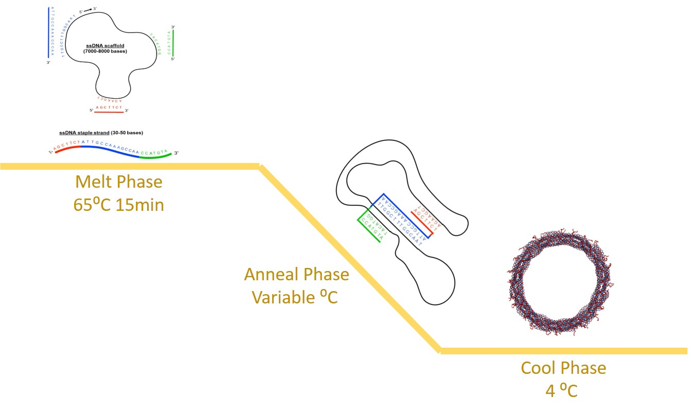

Protocols
DNA Origami Folding
DNA origami is the self-assembly of complex nanostructures using DNA as a programmable building block14–17 and it offers the capacity to construct nanodevices with programmable dynamic functions. DNA origami is binding a long single-stranded DNA (ssDNA) called a scaffold made of M13 bacteriophage with multiple short synthetic ssDNA called staples. Staple and scaffold bind in a piecewise manner based on watson-crick base pairing principles to create regions of double-stranded DNA (dsDNA). This process allows us to control the final conformation of the DNA origami nanostructure. DNA nanostructures are folded through a multi-process annealing ramp including a short melt phase, a longer phase at an annealing temperature(s), and a cooling phase as shown in figure 1 similar to methods in Castro et al. .
Figure 1: The melt phase separates double-stranded DNA into single-stranded DNA, then the annealing temperature(s) allowed the complementary staples to bind to the scaffold, and the cooling phase kinetically traps the structure to its final conformation.
Structure Folding Procedure
Making the sample ready for folding thermal ramp:
- 10 μL of scaffold (8064 bases), in 100nM.
- 20 μL of staples, in 500nM each.
- 5 μL of 10x FOB (50nM TRIS, 10mM EDTA, 50mM NaCl).
- 10 μL of ddH2O.
- 5 μL of MgCl2 in 10x final concentration.
Protocols
Polyethylene Glycol (PEG) Centrifugation
- 1. In a 1.5 mL epi tube, add the desired volume of the structure.
- Add an equivalent volume of 15% PEG8000, and pipette up and down to mix.
- Spin in centrifuge at 16,000 G for 30 min.
- Resuspend in 1x tris and EDTA based dye w/ 20 mM MgCl2, with a volume equal to the initial volume of the structure.
Click Arrows at top to acess next slide
Protocols
Nanodrop Concentration Measurement
- the NanoDrop program on the thermocycler computer.
- Select nucleic acids.
- Leave the arm down for NanoDrop to calibrate.
- Once the calibration is done, add 1-2 μL of the buffer to the NanoDrop and click “BLANK”.
- Name the sample in the bar on the top right.
- Clean the buffer on the platform and the arm using a KimWipe.
- Add 1-2 μL of sample, close the arm, and click “Run”.
- Save with a descriptive name.
- Repeat steps 6-8 at least three times and ensure close values. Take the average of those values.
- Clean with 2 μL of ddH2O. Add the drop and close the device to clean both the arm and the platform.
- Calculate molarity using the following equation.
- A [ng/L]B*660*1,000,000 = C nM
- A: the concentration, in ng/μL, obtained from the NanoDrop.
- B: the number of bases of the scaffold being used. (8064 in this project)
- C: the concentration, in nM.
- For single-stranded DNA, use 330 instead of 660.
-
Where:
Click Arrows at top to acess next slide
Protocols
Transmission Electron Microscopy (TEM)
- Before grid preparation, prepare Uranyl formate (UFo) staining solution.
- Thaw out premade stock of UFo, and place 1 mL droplet of 5M NaOH on the inner wall of the tube.
- Vortex on high setting for 2 minutes, then centrifuge at high setting for 3 mins.
- Place TEM grids on a slide using tweezers, and clean and prep surface using the plasma etcher.
- Hold grid using tweezers, and add 3 μL of sample onto the carbon coated side of the grid. Allow sample to adsorb onto grid surface for 4 minutes.
- With approximately 1 min left, place one 10 μL drop and one 20 μL drop of UFo on a parafilm surface.
- When time has elapsed, wick off excess solution on the grid using a filter paper. Invert grid onto the 10 mL UFo droplet such that the carbon coated side is in contact with UFo. Immediately wick off excess UFo using the filter paper.
- Invert grid onto the 20 μL UFo droplet. Maintain contact with UFo for 40 sec. After 40 sec has elapsed, wick off excess UFo using the filter paper.
- Store prepared grid in a TEM grid box.
Click Arrows at top to acess next slide
Protocols
Agarose Gel Electrophoresis
Preparing the samples:
- Add 15uL of sample to 3uL of loading dye. Running the gel:
- Place 250 mL beaker on scale and add 1.25 g agarose. Then fill to 62.5g with .5x TBE buffer and heat in microwave for 1.5 min. Refill to 62.5 g with ddH2O and 0.5mL 1.375M MgCl2.
- Carefully add 2 μL of ethidium bromide (EtBr) and mix the contents of the beaker thoroughly before pouring out into a gel rig. Place comb into gel rig and allow mixture to cool 15-20 mins before removing comb.
- Fill the gel rig with 0.5 x TBE with 11mMmg buffer.
- Load 17uL of samples into the wells.
- Load 6uL of 100kbps ladder into the gel.
- Secure the cathode and anode to the rig and power source, and run for 2 hours in 80 volts. Place ice around rig so that overheating does not occur.
- Remove gel from rig and place it on the UV table.
- Place the camera over the gel and turn the camera on.
- Open the imaging software on the computer. Center camera over the gel and take the image.
References
Carlos E. Castro et al., A Primer to Scaffolded DNA Origami. Nature Methods 2011.
Click Arrows at top to acess next slide